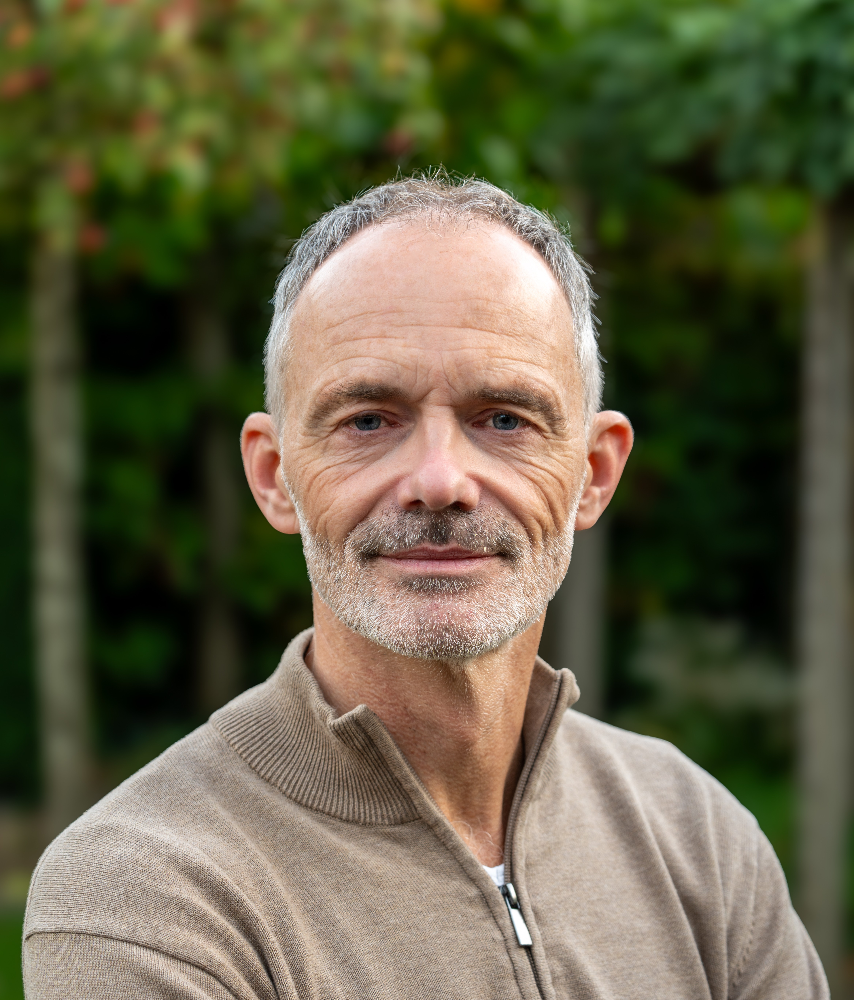

Buurman Bas
Hulp bij kleine klusjes, netjes en met aandacht uitgevoerd.
( Zuidhorn & Briltil )
Hulp bij kleine klusjes, netjes en met aandacht uitgevoerd.
( Zuidhorn & Briltil )
Niet iedereen heeft een handige buur, familielid of vriend die even kan helpen. Daarom bied ik praktische hulp voor mensen die het zelf niet (meer) kunnen.
Anderen helpen en met mijn handen werken doe ik met plezier. Geen professioneel klusbedrijf, maar gewoon een 'buurman' die graag helpt en ervaring heeft met uiteenlopende klusjes.
Ik richt mij op kleine, eenmalige werkzaamheden die u normaal gesproken ook aan een goede buur zou vragen en die meestal binnen één avond klaar zijn.
Mensen om mij heen omschrijven mij als handig, zorgvuldig en precies. Ik neem de tijd en ben pas tevreden als u dat ook bent.

Ophangen/monteren van lampen, planken, spiegels, kranen, kasten en meer.
Iets kapot, los en niet meer zoals het hoort? In veel gevallen is er een oplossing voor.
Twijfelt u of ik kan helpen? Neem gerust contact op. Er is vaak meer mogelijk dan u denkt.
Gratis en vrijblijvend kom ik bij u langs om de werkzaamheden, planning en kosten te bespreken.
Het klusje wordt netjes en zorgvuldig voorbereid en uitgevoerd.
Samen kijken we of alles naar wens is. Daarna ruim ik op en ronden we de klus af.
Geen uurtarief, geen winstoogmerk. Enkel een vergoeding om mijn onkosten te dekken en deze hulp mogelijk te houden. Eventuele materiaalkosten komen natuurlijk voor uw rekening.
We bespreken alles vooraf, zodat u niet voor verrassingen komt te staan.
Woont u in Zuidhorn of Briltil? Stuur gerust een korte beschrijving van de klus. Dan kijken we samen wat mogelijk is.